MAPA
Diferente de The Legend of Zelda: Ocarina of Time e de vários outros jogos da série esse jogo não se passa em Hyrule, mas sim em Termina, outra parte distante do mapa.
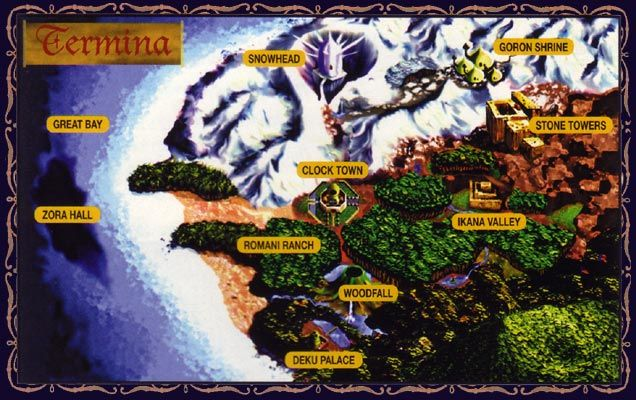
É um mapa bem grande e vasto, cheio de lugares, aldeias e povos diferentes pelo mapa, agora você verá cada uma das 5 partes presentes neste vasto mundo de Majora's Mask.
CLOCK TOWN
Clock Town é a maior cidade de Termina e é o centro de governo e comércio da região. A cidade consiste em quatro seções principais, cada uma com o nome de uma das quatro direções cardeais de uma bússola, bem como uma pequena área conhecida como Piscina da Lavanderia. Clock Town está localizada bem no centro de Termina Field e de toda Termina.
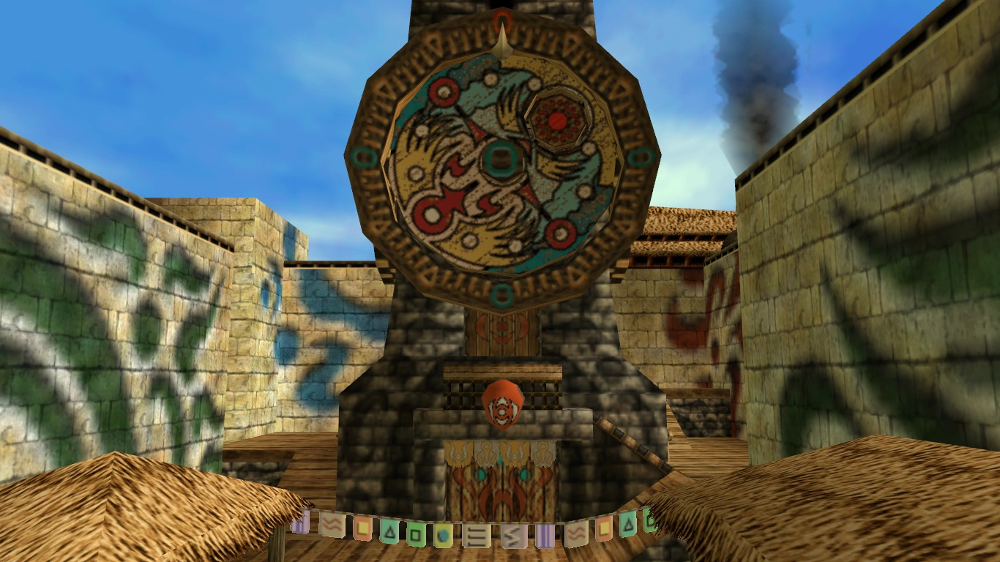
Clock Town é completamente cercada por muros altos. Existem apenas quatro entradas na cidade, cada uma voltada para uma direção diferente da bússola, e todas são constantemente guardadas por soldados. No entanto, há uma pequena entrada secreta através de um túnel de East Clock Town para o Astral Observatory. No entanto, esta entrada não torna a Vila particularmente vulnerável devido à alta vedação que rodeia o Observatório. Apenas Deku Link pode entrar usando uma Deku Flower.
DEKU PALACE
Deku Palace é onde a monarquia Deku está situada. Todo o complexo é fortemente patrulhado por guardas Deku e, como tal, Link só pode entrar em áreas selecionadas e, mesmo assim, apenas em sua forma Deku.
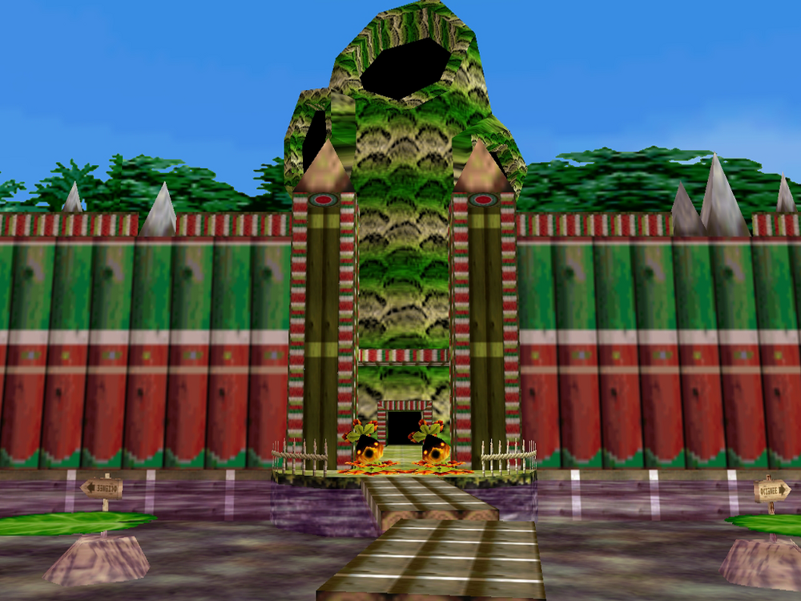
Quando Link chega ao Pântano do Sul pela primeira vez, a única maneira de acessar o Palácio Deku é fazendo um cruzeiro de barco oferecido no Centro Turístico do Pântano, que só está disponível depois que Koume é resgatado da Floresta do Mistério. Uma vez aqui, Link deve conseguir alcançar o Macaco preso que está sendo acusado de ter sequestrado a Princesa Deku. Falar com o Macaco ensinará a Link a "Sonata do Despertar", uma melodia que revela o Templo de Woodfall escondido em Woodfall.
SNOWHEAD
Mountain Village é o lar de Zubora e Gabora, que podem atualizar a Espada de Link. Há também um Goron encalhado em um penhasco nesta área, e Link é capaz de resgatá-lo revitalizando a força do Goron com um Rock Sirloin do Goron Shrine, recebendo a máscara de Don Gero em troca. O Cemitério Goron, o local de descanso de Darmani III, também pode ser encontrado no alto de um penhasco.
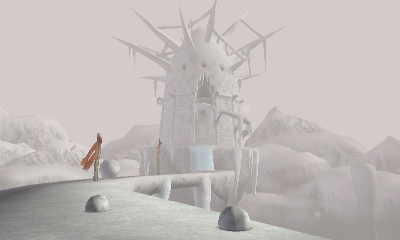
Mountain Village é a principal área que leva a todos os locais proeminentes de Snowhead, então Link deve passar por aqui para acessar as outras regiões. O leste leva à Vila Goron, enquanto o oeste abre caminho para Snowhead e, finalmente, o próprio Templo Snowhead. Uma vez que a primavera voltou para Snowhead, há um atalho através da montanha que liga Mountain Village e Goron Village. Embora cheios de Boes, eles são facilmente derrotados.
GREAT BAY
A Great Bay Coast é uma praia à beira-mar localizada diretamente a oeste de Termina Field. Como sua entrada é guardada por portões, Link precisa de Epona para poder pular esses portões e entrar na Costa.
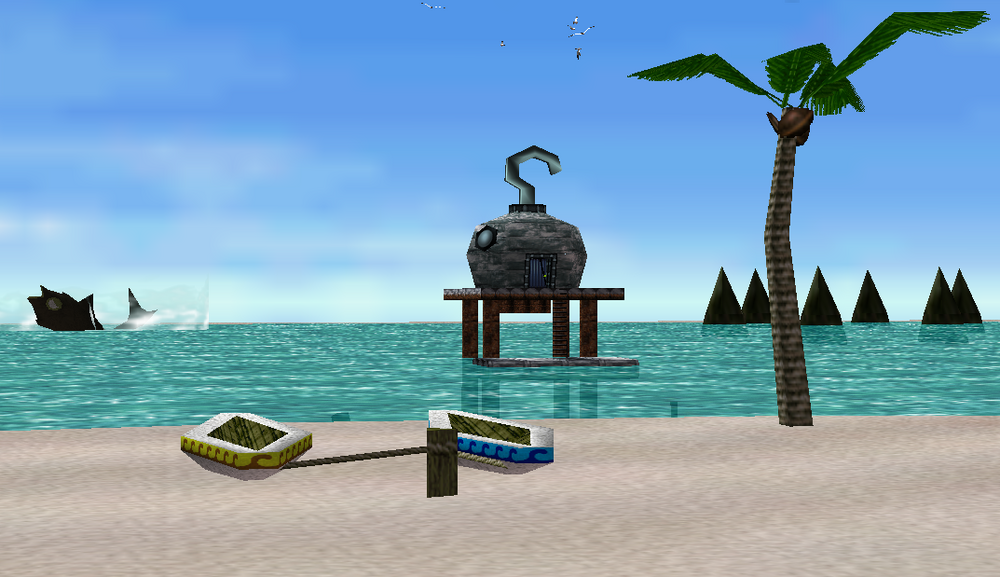
É o lar de inúmeros pontos de referência na região da Grande Baía e é vastamente habitado por uma população robusta de Zoras e muitas criaturas aquáticas não naturais. Costumava ser um paraíso marítimo encantador, mas uma reviravolta nos acontecimentos contaminou as outrora elegantes águas da Grande Baía. A outrora vida aquática natural que habitava as águas foi decomposta e substituída por outras criaturas marinhas ferozes que são muito perigosas. A maldição que foi lançada sobre o oceano o converteu em uma baía traiçoeira habitada pelos dominantes e mortais. Para dissipar a maldição, Link deve encontrar sua fonte.
IKANA CANYON
Ikana Canyon é um local em Majora's Mask. É a zona oriental de Termina. É conhecida por ser uma terra amaldiçoada onde o Reino de Ikana existiu, sendo o lar dos mortos e cheio de espíritos que perduram com arrependimento e ódio. Os Garo Ninjas também podem ser encontrados aqui espionando a terra deserta.
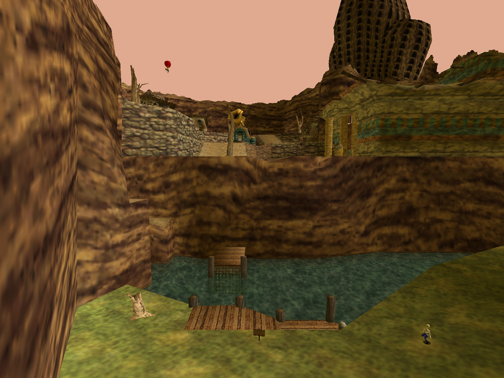
Como Great Bay Coast, a estrada para Ikana é bloqueada por cercas que só podem ser puladas usando Epona. Para chegar ao Ikana Canyon, Link deve mostrar a Garo's Mask ou a Gibdo Mask ao Poe Collector. Ao fazer isso, o homem fará uma árvore aparecer ao lado dele, permitindo que Link to Hookshot suba nela e continue seu caminho. Mais uma vez dentro do Canyon, Link deve fazer uso de suas Flechas de Gelo para cruzar o rio infestado de Octorok e fazer Hookshot em seu caminho até a parte principal do Ikana Canyon.
MAPA
| Diferente de The Legend of Zelda: Ocarina of Time e de vários outros jogos da série esse jogo não se passa em Hyrule, mas sim em Termina, outra parte distante do mapa. |
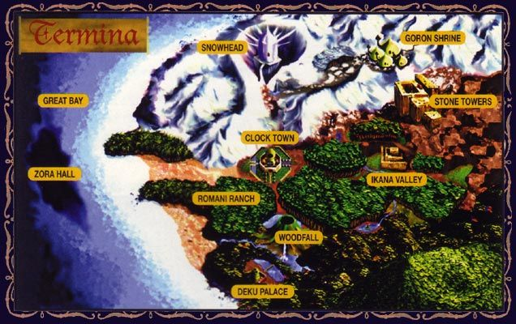
| É um mapa bem grande e vasto, cheio de lugares, aldeias e povos diferentes pelo mapa, agora você verá cada uma das 5 partes presentes neste vasto mundo de Majora's Mask. |
CLOCK TOWN
| Clock Town é a maior cidade de Termina e é o centro de governo e comércio da região. A cidade consiste em quatro seções principais, cada uma com o nome de uma das quatro direções cardeais de uma bússola, bem como uma pequena área conhecida como Piscina da Lavanderia. Clock Town está localizada bem no centro de Termina Field e de toda Termina. |
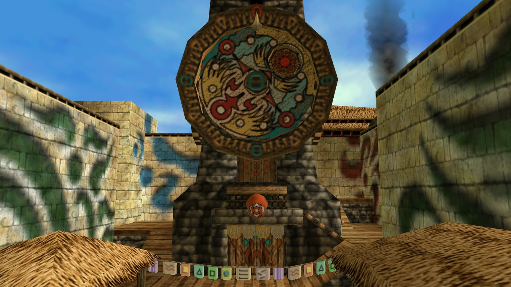
| Clock Town é completamente cercada por muros altos. Existem apenas quatro entradas na cidade, cada uma voltada para uma direção diferente da bússola, e todas são constantemente guardadas por soldados. No entanto, há uma pequena entrada secreta através de um túnel de East Clock Town para o Astral Observatory. No entanto, esta entrada não torna a Vila particularmente vulnerável devido à alta vedação que rodeia o Observatório. Apenas Deku Link pode entrar usando uma Deku Flower. |
DEKU PALACE
| Deku Palace é onde a monarquia Deku está situada. Todo o complexo é fortemente patrulhado por guardas Deku e, como tal, Link só pode entrar em áreas selecionadas e, mesmo assim, apenas em sua forma Deku. |
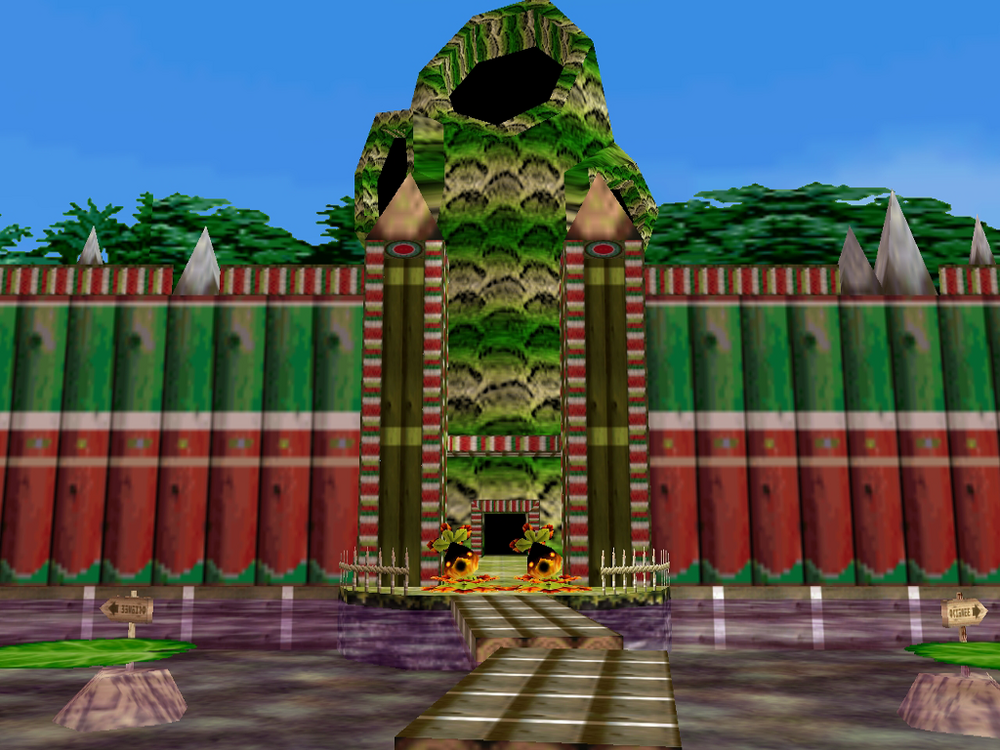
| Quando Link chega ao Pântano do Sul pela primeira vez, a única maneira de acessar o Palácio Deku é fazendo um cruzeiro de barco oferecido no Centro Turístico do Pântano, que só está disponível depois que Koume é resgatado da Floresta do Mistério. Uma vez aqui, Link deve conseguir alcançar o Macaco preso que está sendo acusado de ter sequestrado a Princesa Deku. Falar com o Macaco ensinará a Link a "Sonata do Despertar", uma melodia que revela o Templo de Woodfall escondido em Woodfall. |
SNOWHEAD
| Mountain Village é o lar de Zubora e Gabora, que podem atualizar a Espada de Link. Há também um Goron encalhado em um penhasco nesta área, e Link é capaz de resgatá-lo revitalizando a força do Goron com um Rock Sirloin do Goron Shrine, recebendo a máscara de Don Gero em troca. O Cemitério Goron, o local de descanso de Darmani III, também pode ser encontrado no alto de um penhasco. |
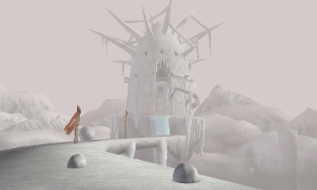
| Mountain Village é a principal área que leva a todos os locais proeminentes de Snowhead, então Link deve passar por aqui para acessar as outras regiões. O leste leva à Vila Goron, enquanto o oeste abre caminho para Snowhead e, finalmente, o próprio Templo Snowhead. Uma vez que a primavera voltou para Snowhead, há um atalho através da montanha que liga Mountain Village e Goron Village. Embora cheios de Boes, eles são facilmente derrotados. |
GREAT BAY
| A Great Bay Coast é uma praia à beira-mar localizada diretamente a oeste de Termina Field. Como sua entrada é guardada por portões, Link precisa de Epona para poder pular esses portões e entrar na Costa. |
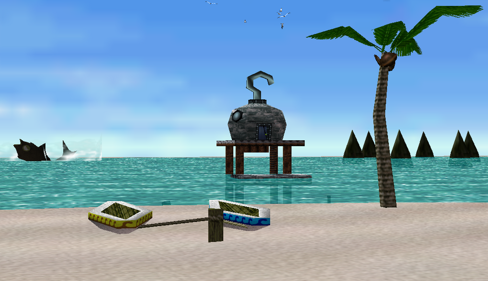
| É o lar de inúmeros pontos de referência na região da Grande Baía e é vastamente habitado por uma população robusta de Zoras e muitas criaturas aquáticas não naturais. Costumava ser um paraíso marítimo encantador, mas uma reviravolta nos acontecimentos contaminou as outrora elegantes águas da Grande Baía. A outrora vida aquática natural que habitava as águas foi decomposta e substituída por outras criaturas marinhas ferozes que são muito perigosas. A maldição que foi lançada sobre o oceano o converteu em uma baía traiçoeira habitada pelos dominantes e mortais. Para dissipar a maldição, Link deve encontrar sua fonte. |
IKANA CANYON
| Ikana Canyon é um local em Majora's Mask. É a zona oriental de Termina. É conhecida por ser uma terra amaldiçoada onde o Reino de Ikana existiu, sendo o lar dos mortos e cheio de espíritos que perduram com arrependimento e ódio. Os Garo Ninjas também podem ser encontrados aqui espionando a terra deserta. |
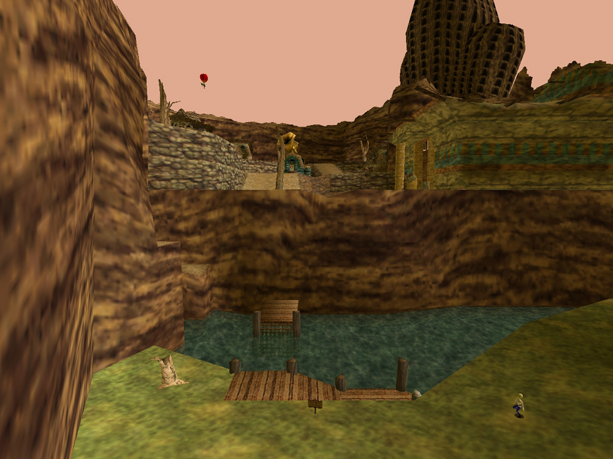
| Como Great Bay Coast, a estrada para Ikana é bloqueada por cercas que só podem ser puladas usando Epona. Para chegar ao Ikana Canyon, Link deve mostrar a Garo's Mask ou a Gibdo Mask ao Poe Collector. Ao fazer isso, o homem fará uma árvore aparecer ao lado dele, permitindo que Link to Hookshot suba nela e continue seu caminho. Mais uma vez dentro do Canyon, Link deve fazer uso de suas Flechas de Gelo para cruzar o rio infestado de Octorok e fazer Hookshot em seu caminho até a parte principal do Ikana Canyon. |